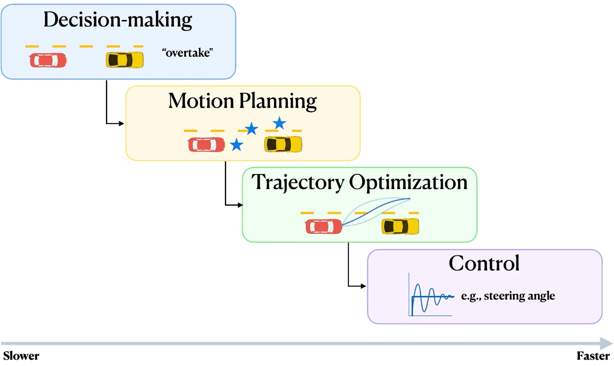

开环控制与轨迹优化
第 1 章把状态空间模型引入为描述机器人动力学的数学表述。这类模型通常写成微分方程组，提供了一个基础框架，用来描述机器人的状态如何在控制输入作用下随时间演化。特别地，我们看到状态空间模型可以由机器人的运动学与动力学推导出来，从而对其物理运动给出紧凑而富有表现力的描述。本章转向一个根本问题：给定机器人的状态空间模型，如何确定能驱使它执行期望行为的控制输入？
第 2~4 章将说明，机器人必须把高层目标转化为精确的物理动作。这一过程常按层次描述，涵盖决策（decision-making）、运动规划（motion planning）、轨迹优化（trajectory optimization）与控制（control）（图 2.1）。每一层职责各不相同，却又彼此深度关联。
在这套层次结构的较高层，决策决定机器人应当执行哪些任务以实现其目标。它涉及对目标、资源与约束的推理，而且往往要在不确定性下进行。例如，对一辆自动驾驶汽车来说，这可能对应判断何时超车、让行或改道。由于涉及的是策略性考量而非即时驱动，决策通常以秒到分钟为时间尺度展开。最终，决策定义了指导后续各层的高层目标。

一旦高层决策确定，运动规划就决定如何在机器人的物理环境中把它实现出来。这通常以机器人的位形空间来表达，涉及寻找一条满足几何与运动学约束的无碰撞路径。例如，运动规划可以为移动机器人计算出一条在杂乱仓库中无碰撞通行的路径。运动规划的时间尺度通常在数百毫秒到数秒量级。
在此路径基础上，轨迹优化把它细化为时间参数化的轨迹，使之动态可行并针对性能指标做优化。这需要求解纳入动力学、执行器限制以及能效、舒适性或安全裕度等目标的连续优化问题。结果是给出一条既包含机器人状态、也包含实现这些状态所需控制输入的轨迹，从而保证与机器人的驱动能力和动态约束相容。轨迹优化通常在更短的时间尺度上运行，从数十毫秒到数百毫秒。
最后，底层控制把轨迹转换成驱动指令，确保机器人在物理世界中忠实地执行期望轨迹。控制器必须高频运行，施加反馈以修正扰动、建模误差或传感器噪声造成的偏差。无论是调节轮上力矩、关节力还是推力矢量，控制都是把高层规划与物理现实闭环连接起来的一环。
这些层次共同构成自主系统的骨架：决策给出策略性指导，运动规划把指导转化为可行路径，轨迹优化把路径细化为可行且最优的轨迹，控制则确保机器人能在真实世界中跟踪这些轨迹。实践中，各层之间的边界往往并不清晰。例如，轨迹优化可能与规划紧密集成，甚至嵌入控制回路之中；而高层决策也可能由低层过程提供信息。出于本书的目的，我们采用上面给出的分层视角，同时承认真实系统经常把这些过程组合或交织在一起。
本章聚焦轨迹优化，把它作为计算既可行又最优的轨迹的基本工具。控制与运动规划将分别在第 3 章和第 4 章再次讨论，本章的重点是轨迹优化问题的表述与求解。我们从第 2.1 节开始，引入轨迹优化问题并把它写成连续优化问题。在此基础之上，第 2.2 节与第 2.3 节给出两大类求解策略——间接法（indirect method）用变分法（calculus of variations）的工具推导连续问题的最优性条件；直接法（direct method）把问题离散化，作为有限维非线性规划（nonlinear program）数值求解。最后，第 2.4 节探讨针对特定问题结构定制的专门技术，即微分平坦（differentially flat）系统。
最优控制问题
最优控制理论旨在确定这样的控制输入：它驱动动力系统满足其物理约束，同时优化某项性能指标。概括而言，表述一个最优控制问题需要三个关键要素：
- 系统的数学模型，通常以状态空间形式给出。
- 系统必须满足的物理约束的描述。
- 待优化的性能指标的说明。
数学模型
如第 1 章已详细讨论的，数学模型的作用是描述系统状态如何在控制输入作用下随时间演化。沿用第 1 章的记号，系统动力学可写为一组常微分方程：
其中 是系统在 时刻的状态， 是控制输入， 定义状态随时间的演化。本书中我们常把 与 分别称为状态序列与控制序列，或等价地称为状态轨迹与控制轨迹。
物理约束
定义了系统动力学之后，下一步是指明系统必须满足的物理约束。这些约束有若干形式，包括：
- 初始条件：指定初始时刻 的状态为 。
- 末端条件：指定末端时刻 的状态为 或 ，其中 表示允许的终端状态集合。
- 状态约束：要求状态在所有 上保持在允许集合 内，即 。
- 控制约束：要求控制输入在所有 上保持在允许集合 内，即 。
根据约束是否被满足，可以定义控制历程与状态轨迹的可容许性（admissibility）。
若状态轨迹 与控制序列 在所有时刻都满足状态约束与控制约束，即：
可容许性是最优控制中的一个关键概念，因为它限制了可实现轨迹的集合注实践中，这让数值方法可以只关注可容许的状态与控制序列，而不必考虑所有可能的解。。
性能指标
最优控制问题的最后一个组成部分是待优化的性能指标。最优控制即让该性能指标取极小（或极大）的控制。某些情况下，性能指标可由问题陈述隐含给出（例如最小化到达目标状态所需的时间），而在另一些情况下必须显式设计（例如以让乘客舒适的方式驾驶汽车）。
本书聚焦可写成如下代价泛函注泛函把函数映射为实数；直观地说，泛函是「函数的函数」。这里，代价泛函把一条状态轨迹与一个控制序列映射为代表总代价的实数。的性能指标：
其中 是终端代价， 是运行代价。终端代价 在末端时刻 处取值，通常表示与该时刻系统状态相关的代价，例如偏离期望目标状态的惩罚。运行代价 在区间 上积分，表示系统在每个时间步上付出的瞬时代价，例如能耗代价，或与系统运行相关的其他任何代价。视问题而定，末端时间 可以是有限且固定的、有限且自由的，或无穷的注末端时间为无穷时，终端代价 通常被忽略并置为零。。
问题表述
于是，最优控制问题可以表述为：
确定一个可容许的控制序列 ，使系统动力学：
产生相应的可容许状态轨迹 ，并使性能指标取极小：
其中 与 分别称为最优控制序列与最优状态轨迹。
该问题可以正式写成如下优化问题：
这个一般性表述是本书余下各章所发展的最优控制方法的出发点。此外，关于该问题的解，还有几个重要属性值得强调：
1. 存在性： 最优控制问题的解不保证存在；可能不存在既容许又最优的控制历程。
2. 唯一性： 即使解存在，也可能不唯一。多个可容许的控制输入可以产生相同的性能。这会给数值算法带来挑战，但也提供了灵活性，可以按应用需要在同样好的解中挑选。
3. 最优性： 最优控制的目标是找到优于所有其他可容许候选者的控制序列。因此最优控制关注的是全局最优性，而非局部最优性。
考虑一个自动驾驶赛车场景：目标是在尽可能短的时间内跑完一条已知赛道的单圈。我们可以把它表述为有限时域最优控制问题，目标是最小化到达指定目标位置 所需的末端时间 ，约束条件是车辆必须始终留在赛道上。记 为与赛道上位置对应的可容许状态集合。
设车辆用式 (1.29) 的简单运动学车辆模型描述，状态 表示位置与朝向，控制输入 分别表示前进速度与转向角。得到的最优控制问题为：
在该表述中，代价只依赖末端时间，不直接依赖中间点的状态或控制。因此，时间最优解 会落在可容许控制集与状态集的边界上。实践中，这意味着车辆会全油门行驶、把转向打到物理极限来缩短圈速——这种策略在数学上达到了最优，但乘坐体验可能并不平顺舒适。
本书中我们会看到，最优控制问题的解可以采取不同形式，取决于它是否以及如何利用当前状态的反馈。在最基本的层面上，我们区分开环（open-loop）控制与闭环（closed-loop）控制。闭环控制将是第 3 章的重点，本章讨论开环控制。
开环控制
若最优控制纯粹按给定初始状态下时间的函数计算：
则称其为开环形式。在轨迹优化的语境下，把关注点限制在开环策略是自然的：它们在计算效率与效果之间取得平衡——计算开环序列比计算闭环策略更快；而鲁棒性可以通过闭环跟踪、或以滚动时域方式重新优化轨迹来获得，正如模型预测控制（Model Predictive Control）所做的那样注第 3 章将进一步讨论。。
引入最优控制问题之后，下面转向计算最优开环解的方法。从根本上说，问题 (2.3) 是一个无穷维优化问题，其优化变量是时间的函数。实践中，求解方法必须依赖离散化策略，用有限维问题逼近无穷维问题。不同的离散化方式导致不同的方法族。
大体上存在两大类方法：间接法与直接法。间接法遵循「先优化、后离散」的范式：先推导最优性的必要条件——通常是以含协态变量的边值问题形式出现——再用数值技术求解这些条件。相反，直接法采用「先离散、后优化」的做法：把状态序列与控制序列用有限维表示参数化，然后数值求解得到的有限维优化问题。
除这两大类之外，有些系统还具有进一步的结构简化。特别是微分平坦系统允许用少量变量完整刻画系统的演化注这些变量通常称为平坦输出（flat outputs）。。这一性质使高效的轨迹生成与优化成为可能，也让这类系统在移动机器人与航空航天应用中格外重要。
本章余下部分详细考察这三类方法：第 2.2 节的间接法、第 2.3 节的直接法，以及第 2.4 节针对微分平坦系统的轨迹优化。
间接法
间接法借助变分法（calculus of variations, CoV）的思想，为求解最优控制问题提供了有原则的框架注变分法把经典微积分的原理从函数推广到泛函。其核心思想是研究候选函数的小扰动——称为变分（variation）——如何影响泛函的取值。通过分析这些变分的一阶与高阶效应，可以推导出最优性的必要条件。。关于变分法及其在最优控制理论中应用的系统论述，可参阅 Kirk (2004)注1. Kirk, D. E. Optimal Control Theory: An Introduction. Dover Publications, 2004.。间接法的核心是推导任何解都必须满足的最优性必要条件（necessary optimality conditions, NOCs），然后借助数值技术计算满足这些条件的解。这样，必要条件就成为最优控制问题的连续时间表述与其数值求解之间的桥梁。
在推导无穷维优化问题的这类条件之前，先回顾有限维优化中的关键概念，它们将作为后续讨论的基础。
无约束非线性优化问题的必要条件
考虑如下有限维优化问题：
其中 假定连续可微，即 。我们希望找出任何极小点——局部的或全局的——都必须满足的必要条件。
关键的直觉是：在局部极小点处，决策变量的任何无穷小扰动都不应使目标函数下降。形式上，这需要分析 在候选极小点 附近的微小变化下如何改变。
一阶必要条件
设 是局部极小点。若 ，可以用梯度与泰勒级数展开刻画 在 附近的行为。对微小扰动 ，代价的变化到一阶为：
若 是局部极小点，则对足够小的 ，一阶项必须非负注这是因为，若把 扰动 能使代价下降，那么 就不是局部极小点。：
特别地，取 为坐标单位向量的正、负倍数（即除一个分量为 1 之外其余分量全为零的向量），可以同时得到：
这迫使：
或更紧凑地写成：
因此，任何局部极小点 都必须是 的驻点。
二阶必要条件
设 ，再次考虑 在局部极小点 附近的泰勒展开，这次到二阶：
要使 成为局部极小点，二阶变分必须对所有足够小的 非负，即：
利用一阶条件 ，线性项消失，剩下：
因此，在任何局部极小点处，Hessian 矩阵 必须半正定。
设 是 的局部极小点。若 在包含 的开集上属于 ，则：
若进一步有 ，则：
有约束非线性优化问题的必要条件
在介绍无约束问题的必要条件之后，本节把讨论推广到带约束的优化问题。在有约束的情形下定义最优性条件，需要引入称为拉格朗日乘子（Lagrange multiplier）的辅助变量。这些变量与约束相关联，既便于刻画最优解，也能揭示最优代价对约束扰动的敏感性。本节对拉格朗日乘子理论的讨论限于等式约束优化。关于有限维优化中最优性条件的系统论述，可参阅 Bertsekas (2016)注2. Bertsekas, D. Nonlinear Programming. Athena Scientific, 2016.。
考虑如下约束优化问题：
其中 与 连续可微。
为紧凑起见，定义约束函数 为：
于是约束可以简写为 。
等式约束优化的拉格朗日乘子定理指出：若 是局部极小点，则存在标量 （称为拉格朗日乘子），使得：
为理解该条件，注意代价梯度 必须与一阶可行变分子空间正交：
该子空间由所有在一阶意义下保持可行性的变分 组成注即这些变分使 在一阶意义下满足 。。因此，条件 (2.10) 保证对所有 有一阶代价变分 。这与无约束优化中的 条件相类似。
形式上，等式约束最优性的必要条件可总结如下：
设 是 在等式约束 （）下的局部极小点，并假设约束梯度 线性无关。则存在唯一的向量 （称为拉格朗日乘子向量），使得：
用拉格朗日函数 表达这些条件往往更方便，其定义为：
于是局部极小点 的一阶必要条件可写成紧凑形式：
其中 与 分别表示对 与 的梯度；式 (2.13) 的方程组由 个方程、 个未知量组成——即 的 个分量与 的 个分量。
实践中，最优性条件是把候选解筛选为全局或局部极小点的有力工具，也常常构成数值优化算法的基础。例如，对问题 (2.5) 的无约束情形，可以（i）求解 找出所有驻点；（ii）在每个候选点上检验 ，施加二阶测试。同一思路自然可以推广到无穷维最优控制问题：任何候选解都必须满足相应的必要条件。不过，随着问题转为无穷维，必要条件的性质会发生显著变化：最优控制的必要条件不再是有限维情形下的代数方程，而是微分方程。
庞特里亚金最小值原理
把最优性必要条件的概念推广到无穷维问题，就得到庞特里亚金最小值原理（Pontryagin's Minimum Principle, PMP），它是最优控制理论的基石。具体来说，PMP 把有限维的必要条件推广到无穷维情形。
考虑这样的问题：寻找可容许控制 ，驱动系统：
沿一条使代价泛函极小的轨迹运动：
为推导必要条件，定义哈密顿函数（Hamiltonian），它是有限维优化中拉格朗日函数的对应物：
其中 是协态（costate）向量注协态这个名称强调每个状态变量都对应一个协态，类比于有限维优化中的拉格朗日乘子。。
与有限维情形类似——那里通过考虑扰动 引起的代价增量 推导最优性必要条件——这里我们分析候选函数附近变分引起的增量 。
设 是系统 (2.14) 在 上的最优控制，其对应的状态轨迹为 。则存在协态向量 ，使得对所有 下列条件成立：
以及边界条件：
其中 与 分别表示末端状态与末端时间的变分注本节余下部分将说明，式 (2.17) 中的边界条件取决于末端状态与末端时间是固定的（即 或 ）还是自由的（即 或 任意）。。
式 (2.16) 构成最优性的必要条件。它们组成 个一阶微分方程—— 个关于状态、 个关于协态——再加上 个定义控制输入的代数方程。求解这些方程会得到 个积分常数。其中一半由初始条件 确定，剩下的 个（若末端时间自由则为 个）由式 (2.17) 的边界条件给出。这形成一个两点边值问题，在特殊情形下可解析求解，也可用打靶法或配点法等数值方法求解注26. Hertling, J. 「Numerical Methods for Two-Point Boundary Value Problems (Herbert B. Keller).」 SIAM Review 12(2), 313-315, 1970.。
实践中，一旦初始状态固定，把相应假设代入式 (2.17) 即可得到边界条件。常见情形包括：
固定末端时间与固定末端状态
若 与 都固定，则 、，只剩下唯一的边界条件：
固定末端时间与自由末端状态
若 固定而 自由，则 ，而 任意。因此边界条件为：
自由末端时间与固定末端状态
若 固定而 自由，则 ，而 任意。因此边界条件为：
自由末端时间与自由末端状态
若 与 都自由，则 与 都任意，式 (2.17) 中的两个系数都必须置零，即：
这四种情形覆盖了许多有实际意义的问题，更一般的边界条件可参见 Kirk (2004)注9. Kirk, D. E. Optimal Control Theory: An Introduction. Dover Publications, 2004.。
求解两点边值问题
找出满足式 (2.16) 中必要条件的解并非易事，因为它们必须同时满足 个微分方程以及施加在 与 两端的边界条件。这类在时间上两个不同点给出条件的问题称为两点边值问题（two-point boundary value problem, TPBVP）。
多年来，人们发展出多种求解 TPBVP 的数值方法，常用的大致有两类：
- 打靶法（shooting method）：把 TPBVP 重新表述为初值问题——先猜测未知的边界条件（如初始协态），向前仿真系统，再迭代调整猜测值，直到末端边界条件被满足。打靶法概念上直接，但可能出现数值不稳定，尤其在时间跨度较长时。
- 配点法（collocation method）：在若干离散点（称为配点）上用含未知参数的参数化函数近似解。这类方法把 TPBVP 转化为一个大型非线性代数方程组，可用计算技术求解。配点法稳健，在实践中被广泛使用，因为它们避免了打靶法的不稳定问题。
现代科学计算环境为这些想法提供了高层实现。例如 Python 的 scikits.bvp_solver 包，或 MATLAB 的 bvp4c 函数，都以较少的用户投入实现了求解 TPBVP 的数值算法。
多数求解器假定，式 (2.16) 的必要条件方程组连同其边界条件可以写成标准形式：
其中 汇集未知函数（如状态与协态）， 编码它们的动力学， 编码两点边界约束。
为说明 TPBVP 在实践中如何求解，考虑如下玩具动力学：
边界条件为 与 。这些边界条件也可等价地写成标准形式：
在 Python 中，系统动力学 与边界条件 可以直接传给 solve_bvp，如算法 2.1 所示。
from scipy.integrate import solve_bvp
import numpy as np
# Dynamics: ż = g(z, t)
def g(t, z):
return np.vstack((z[1], -z[0]))
# Boundary conditions: l(z(t0), z(tf)) = 0
def l(z0, zf):
return np.array([z0[0], zf[0] + 2])
# Time mesh and initial guess for z(t)
t_mesh = np.linspace(0, 4, 5)
z_guess = np.zeros((2, t_mesh.size))
# Solve TPBVP
sol = solve_bvp(g, l, t_mesh, z_guess)
z_sol = sol.sol(np.linspace(0, 4, 100))算法 2.1： 用 solve_bvp 求解式 (2.18) 形式的两点边值问题。
事实上，许多最优控制问题都可以写成式 (2.18) 的标准 TPBVP 形式，并直接用现成的 BVP 求解器（如 solve_bvp）求解，有时只需做简单改写。常见情形包括带特殊点条件的问题，如自由端点问题、切换点、界面点或不连续点。示例 2.2.1注12. Jonathan P. How. Lecture Notes for Principles of Optimal Control. 2008.在自由末端时间问题的背景下说明了这些想法。
考虑双积分器系统：
其中 是状态， 是控制输入。控制目标是找一条使代价极小的轨迹：
并满足边界条件：
这是一个末端时间自由、状态边界条件固定的问题。代价同时惩罚机动的持续时间（通过 项）与控制力度（通过 的积分），二者的权衡由权重 与 决定。
令 、，可以把双积分器动力学等价地写成一阶微分方程组：
于是状态向量为 ，边界条件变为：
哈密顿函数为：
其中 与 是协态变量。接下来，对 分别关于 、、 求偏导，由式 (2.16) 构造必要条件：
于是由最后一个条件，最优控制满足：
由于这是末端时间自由、终端状态固定的问题，必要条件的边界条件为：
然而上面得到的必要条件并不能直接与数值 TPBVP 求解器所要求的标准形式（式 (2.18)）相匹配，后者假定末端时间固定。要把问题写成标准形式，可以采用时间缩放（time-scaling）策略。首先用缩放后的时间变量 把时间区间重新标度到固定区间 。接着必须按新的时间变量调整导数。由链式法则，对 求导会引入一个缩放因子，即 。最后，把末端时间 替换为一个带平凡动力学 的辅助状态变量 。这样得到末端时间固定（等于 ）的 TPBVP，并多出一个编码原末端时间 的状态变量 。
对本例，时间缩放后的代价变为：
相应的哈密顿函数为：
于是最优性必要条件变为：
边界条件为：
经过这一改写，问题就符合标准形式，可以数值求解了。
关于如何把非标准边值问题改写成适合通用求解器的标准形式，可参见 Ascher and Russell (1981)注15. Ascher, U. M., Russell, R. D. 「Reformulation of boundary value problems into 『standard』 form.」 SIAM Review 23(2), 238–254, 1981.。关于自由末端时间最优控制问题的 TPBVP 求解器的实际实现，可参阅仓库 github.com/StanfordASL/pora-exercises 中的 notebook ch02/free_final_time_optimal_control.ipynb。
直接法
前面介绍的都是间接法：先推导连续时间最优控制问题的最优性必要条件，再对其离散化，用数值方法求解得到的两点边值问题。间接法能提供深刻的理论洞察，但实践中往往难以应用——边值问题本身就不好解，对复杂非线性动力学或大规模系统尤其如此。
直接法走相反的路线：不解析推导最优性条件，而是先把问题离散化，把连续时间最优控制问题化归为有限维非线性优化问题，再用通用的数值优化算法求解。
把连续时间最优控制问题转成适合数值优化的离散形式，这一过程称为转录（transcription）。转录方法很多，其中简单且广泛使用的是前向欧拉离散化（forward Euler discretization）：在时间区间 上取离散化 ，并假定状态与控制输入都满足零阶保持（zero-order hold），即二者在每个区间 内保持不变，以此近似状态与控制序列。随后用欧拉积分把系统动力学向前积分：
直接法通常分为两大家族：
- 状态与控制参数化方法（也称直接配点法，direct collocation）：同时离散控制输入与状态轨迹，并把动力学作为代数约束显式引入，在每个离散点上把状态与控制变量联系起来（例如梯形配点、Hermite-Simpson 配点、Gauss-Lobatto 方法等）。
- 控制参数化方法（也称直接打靶法，direct shooting）：只离散控制输入，状态轨迹则通过把系统动力学随时间向前数值积分得到。因此优化变量只剩离散后的控制，状态由动力学积分隐式确定（例如单次打靶与多次打靶技术）。
下面用一个具体例子说明这两类方法的基本思想。
考虑在有水流的河中把一艘船从点 操纵到点 的问题。船可以靠调整方向来控制，速度恒定。船的动力学由下列微分方程描述：
其中 是船的位置， 是沿河方向的坐标， 是横跨河方向的坐标， 是控制输入（船的方向）， 是船的恒定速度。为简单起见，假定水流由作用在 方向上的任意函数描述，其强度取决于位置 ，即 。
目标是最小化整个过程的控制能量，可写成如下最优控制问题：
直接配点法
考虑示例 2.3.1 中引入的问题。对状态与控制做参数化，即采用配点法，可得到如下有限维非线性规划，它等价地由算法 2.3.1 描述：
在这一表述中，状态轨迹与控制轨迹都被离散化，并作为决策变量处理。系统动力学不再通过数值积分施加，而是作为代数等式约束把相邻的离散点联系起来。
# Decision variables: (x_i, y_i, u_i), i = 0, ..., N
get_x = lambda z: z[:N + 1]
get_y = lambda z: z[N + 1:-N]
get_u = lambda z: z[-N:]
get_z = lambda x, y, u: np.concatenate([x, y, u])
# Cost: sum_{i=0}^{N-1} h_i * u_i^2
cost = lambda z: np.sum(h * np.square(get_u(z)))
def constraints(z):
x, y, u = get_x(z), get_y(z), get_u(z)
constraints = []
for i in range(N):
# x_{i+1} = x_i + h_i * (v*cos(u_i) + flow(y_i))
constraints.append(x[i+1] - x[i] - h*(v*np.cos(u[i])
+ flow(y[i])))
# y_{i+1} = y_i + h_i * v*sin(u_i)
constraints.append(y[i+1] - y[i] - h*v*np.sin(u[i]))
# Boundary conditions: (x_0, y_0) = (0, 0), (x_N, y_N) = (M, l)
constraints.extend([x[0], y[0], x[N] - M, y[N] - l])
return np.array(constraints)
# State bounds
x_lower = np.zeros(N + 1)
x_upper = M * np.ones(N + 1)
y_lower = np.zeros(N + 1)
y_upper = l * np.ones(N + 1)
# Control bounds: |u_i| <= u_max
u_lower = -u_max * np.ones(N) # control constraint
u_upper = u_max * np.ones(N) # control constraint
bounds = Bounds(
get_z(x_lower, y_lower, u_lower),
get_z(x_upper, y_upper, u_upper))
# Solve the NLP
result = minimize(cost, z0, bounds=bounds,
constraints={'type': 'eq', 'fun': constraints})直接打靶法
为状态与控制参数化引入的许多概念可以直接搬到控制参数化方法上，关键差别在于如何处理动力学。在控制参数化（打靶）方法中，优化变量只包含每个离散点上的控制输入。状态轨迹不被显式优化，而是通过对系统动力学做前向仿真递推算出。换句话说，一个候选控制序列唯一确定对应的状态序列，这些状态再用于评估代价以及任何状态约束。
具体地，我们再次考虑示例 2.3.1 中的策梅洛问题，这次采用打靶法的转录方式。在这一表述中，控制输入 作为优化变量，状态 则由动力学递推计算。
得到的有限维优化问题为：
这里动力学不再是优化问题中的约束，而是给定候选控制序列后隐式确定状态演化的方程。算法 2.3 给出了用打靶法求解策梅洛问题的 Python 实现。
# Decision variables: (u_i), i = 0, ..., N-1
# Cost: sum_{i=0}^{N-1} h_i * u_i^2
cost = lambda u: np.sum(h * np.square(u))
# States computed recursively from x_0 = 0, y_0 = 0
dynamics = lambda x, y, u: (x + h*(v*np.cos(u) + flow(y)),
y + h*v*np.sin(u))
def inequality_constraints(u):
x, y = 0, 0 # initial condition (x(0), y(0)) = (0, 0)
constraints = []
for ui in u:
x, y = dynamics(x, y, ui)
# (x_i, y_i) >= (0, 0) (box constraint with below)
constraints.extend([x, y])
# (x_i, y_i) <= [M, l]
constraints.extend([M - x, l - y])
# (x_N, y_N) >= [M, l] (enforcing equality with the above)
constraints.extend([x - M, y - l])
return constraints
bounds = Bounds(-u_max * np.ones(N), u_max * np.ones(N)) # |u_i| <= u_max
# Solve NLP
result = minimize(cost, u0, bounds=bounds,
constraints={'type': 'ineq', 'fun': inequality_constraints})两类方法各有优劣。控制参数化方法得到的优化问题通常更小，因而在计算上更有吸引力；动力学通过积分被精确满足（精度取决于所选数值积分器），当动力学复杂或只能通过黑箱仿真器访问时尤为有用。但状态约束可能难以施加，因为状态不是显式的优化变量，而是由动力学积分隐式定义的。当状态约束至关重要时，这可能导致数值不稳定或不可行。此外，数值积分误差会累积，可能降低解的精度。
另一方面，状态与控制参数化方法把状态与控制都作为优化变量，因此可以直接施加状态约束，数值稳定性和鲁棒性更好；当约束起核心作用时，这类问题往往条件数更好。但优化问题的规模通常会显著增大，因为每个离散点上的所有状态与控制都成了决策变量。维数升高会带来更大的计算开销，也会让求解器对初始猜测更敏感。
实践中两类方法都被广泛使用，选择哪一种往往取决于问题结构、是否有可用的仿真器或系统模型，以及精确处理状态约束的重要程度。
微分平坦系统
直接求解最优控制问题来计算开环控制序列，往往计算量很大。在许多应用中，值得用严格最优性注即给定代价泛函下的理论最优性能。去换计算可行性，转而寻找更容易计算的「好」轨迹，即使它略微次优。
对一类称为微分平坦系统（differentially flat system）的特殊系统，生成这样的可行轨迹要简单得多。若存在一组输出（称为平坦输出，flat output），使得系统所有状态与输入都能表示为这些输出及其有限阶导数的代数函数，则称该系统是微分平坦的。这一性质使轨迹生成可以在平坦输出空间中完成，无需在优化过程中求解微分方程，从而大幅降低计算复杂度。
微分平坦模型出现在若干常见机器人应用中，包括简单汽车模型、四旋翼，以及许多其他轮式或空中载具。它们相对简单又不失表达力，因而对轨迹规划与开环控制综合格外有吸引力。
回顾示例 2.1.1 中的运动规划任务：目标是计算一条开环控制序列，使车辆以最短时间沿赛道行驶到目标位置。如果我们放松最优性要求，只求一条沿赛道行驶的可行轨迹，就可以利用运动学汽车模型的微分平坦性。具体地，考虑式 (1.29) 中的运动学汽车模型：
其中 是车辆位置， 是航向， 是速度， 是转向角， 是轴距。
该系统是微分平坦的，平坦输出为 。因此，只需为 与 指定任意满足赛道约束的可微轨迹即可。由这些轨迹，可以解析地算出其余的状态与控制变量——也就是实际实现时真正需要的量。航向由速度方向给出：
沿轨迹的速度则可用速度的任一分量计算：
最后，转向角由航向动力学确定：
这样，只要指定光滑的平坦输出轨迹，就能完整生成车辆的可行轨迹，并直接导出所有状态以及（更重要的）控制输入。
下面用微分平坦性的概念把这一思想形式化注Murray (2009) 是系统学习微分平坦性的好资料。。
对状态为 、控制为 的非线性系统：
若存在函数 使得：
其中 表示 的第 阶时间导数，且系统轨迹可表示为平坦输出 及其有限阶导数的函数：
则称该系统是微分平坦的。
换句话说，若存在一组输出 （与输入向量 同维），它完全确定状态与输入，且不需要对系统动力学做积分，则系统是微分平坦的。对轨迹优化而言，这一性质特别有利：平坦系统的演化完全由平坦输出刻画，因此可以直接在输出空间中计算轨迹，再映射回相应的输入，从而避免昂贵的动力学积分。
以下几节探讨利用微分平坦性设计开环轨迹的不同技术，包括如何在平坦输出空间中参数化轨迹、如何处理初始与终端状态约束，以及如何施加控制约束。
轨迹参数化
在平坦输出空间中规划轨迹，首要限制是轨迹必须可微。常见做法是用 个光滑基函数参数化平坦输出 的每个分量：
其中 是 的第 个分量， 是定义轨迹的参数， 是光滑基函数。
多项式基函数是自然的选择，例如 、、 等等。这种参数化的一个关键好处是 关于变量 是线性的，从而可以把 及其导数上的约束直接转成系数 上的约束。
等式约束
任何开环运动规划问题的一个关键环节是施加边界条件。通常这指保证系统从规定的初始状态 出发，并且常常还要求它在某个终止时刻 到达期望的终端状态 。在平坦输出空间中规划时，这些状态条件必须写成平坦输出 及其导数上的约束。回顾式 (2.22) 中的映射，可得：
实践中这意味着必须施加 与 上的边界条件。当采用式 (2.23) 那种光滑基函数参数化时，这些条件直接转成系数 上的代数约束。把式 (2.23) 求导 次，得到：
于是可以把边界条件写成一个线性方程组：
只要基函数构成的矩阵列数足够且列满秩，就可以解出（可能不唯一的），从而解决轨迹生成问题。
更一般地，平坦输出或其导数上的任何等式约束——不限于初始与终端状态——都可以写成这种线性形式。例如，途经点可以作为额外的等式约束加入。但如果施加的约束太多，系统可能变成超定的，不再有可行解。此时必须提高基函数的丰富程度，例如改用更高阶的多项式或增加基函数，这会提升灵活性，但也会增加计算复杂度。
用时间缩放处理不等式约束
2.4.2 节处理了等式约束，现在转向不等式约束。这类约束在运动规划与控制中很常见，用于施加执行器限制或状态的安全边界。例如示例 2.4.1 中的简单汽车模型可能有如下速度约束：
在平坦输出空间中处理这类约束的一个有效技术是时间缩放（time scaling）：先规划一条满足等式约束的轨迹（例如通过求解式 (2.26)），再调整它的时间演化——沿路径加速或减速——以满足不等式约束。
形式化地说，设 是满足等式约束的轨迹。引入路径参数 ，可以把几何路径注轨迹的几何路径指轨迹经过的状态 的序列，但不与特定时间相关联。与其时间信息分离：
其中 、、注条件 保证可逆，因此每个 对应唯一的 。。几何路径 刻画状态序列，而 的取法决定系统以多快的速度走完这条路径。改变 就称为时间缩放。
考虑一个标量系统，状态为 ，并有一条连接初始状态 与终端状态 的直线路径：
为 选取三次多项式：
它满足 、、，由此得到时间轨迹：
这里 控制轨迹的持续时间。若施加速度上界：
则：
最大速度在 处取得。于是可以把它转成 上的约束，以保证不等式约束成立：
示例 2.4.2 说明了关键思想：不等式约束常常可以转化为时间律 上的条件，而不改动几何路径本身。
对一般状态空间系统，时间缩放往往更复杂。给定式 (2.20) 所示系统动力学的一条可行轨迹 ，可以用路径参数 把它改写成几何路径 ：
做时间缩放时，我们在可能不同的区间 上用新的路径参数 替换 ，并令 、注几何路径仍定义在区间 上，对任何新的时间缩放律都必须保持不变。。新的缩放仍须满足动力学：
由于几何路径固定（前面已经定义好）， 与 也随之固定。因此，用新路径参数 做时间缩放，只有在能找到合适的 时才允许。幸运的是，对许多系统——包括运动规划中常研究的那些——只要 选得合适，这是可以做到的。
再次考虑式 (1.29) 中的简单汽车模型：
并假定我们已经利用该模型的微分平坦性、通过式 (2.26) 把平坦输出 映射到状态与控制空间，得到了候选轨迹 及其控制 。
对该模型，路径参数 的自然选择是弧长：
于是 。这一取法下，几何路径 定义在 上，其中 是路径总长。把动力学用任意时间缩放 重写，得到：
它对任何容许的时间缩放 都必须成立注取平凡选择 就重现了原始的候选轨迹及其控制输入 。。
采用弧长参数化后有 ，于是这些方程简化为：
前两式对任意 自动成立，因为原始候选轨迹本身就满足动力学。第三式只要沿用相同的转向输入 就成立。因此，对任何时间缩放 ，动力学都保持一致：几何路径被保留，而沿路径的时间演化是自由的。这一观察很有力：我们可以在只要求 的前提下自由调整速度输入 ，而不改变轨迹的几何形状。实践中，这让我们能轻松施加速度上的不等式约束 。
示例 2.4.3 展示了时间缩放在一个由运动学约束导出的模型上的直接应用。这一思想自然推广到一大类运动学模型：
应用链式法则，得到：
可改写为：
其中 是几何控制（geometric control）注由于 必须严格递增，需要 。。式 (2.30) 表明，几何路径 完全由几何控制 决定，与时间参数化无关。因此，一旦确定了几何控制与几何路径，就可以用路径参数 对轨迹 做时间缩放，而不改变几何路径。相应的控制输入由 恢复。
总之，对形如式 (2.29) 的模型，可以按以下步骤做时间缩放：
- 步骤 1：选取路径参数 （例如弧长），计算原轨迹 对应的 ，并确定区间 。
- 步骤 2：用 重新参数化控制 。
- 步骤 3：对 计算几何控制 。
- 步骤 4：在区间 上定义新的路径参数函数 ，满足 、、。
- 步骤 5：对所有 计算新的控制输入 。
考虑运动学独轮车模型：
其中 表示位置， 是航向， 是前进速度， 是转动角速度。定义状态为 ，控制为 。
对该系统，自然的路径参数同样是弧长：
于是 。若轨迹定义在 上、总长为 ，则 、。相应的几何控制为：
其中 直接来自 。引入新的时间律 会在路径上生成新的速度曲线 ，可据此解出新的 输入：
实践中往往更简单：直接指定沿路径的速度曲线 ，再计算相应的角速度 。最后，要把新控制写成时间的函数，注意：
它定义了把每个点 映射到新时刻的函数 。
本例考虑平面四旋翼系统的控制。四旋翼用六个状态变量建模：水平位置 、竖直位置 、姿态角 ，以及它们各自的速度。控制输入是两个旋翼的推力 与 。目标是最小化能耗，用推力平方对时间的积分表示：
系统动力学由下列微分方程给出：
其中 是质量， 是重力加速度， 是质心到每个旋翼的距离， 是绕 轴的转动惯量。
该系统是微分平坦的，平坦输出为 。关于如何把微分平坦性用于该系统的轨迹生成，可参考仓库 github.com/StanfordASL/pora-exercises 中的 notebook ch02/differentially_flat_planar_quadrotor.ipynb。
本章小结
本章探讨了轨迹优化如何为计算开环运动提供基础框架，并为机器人系统中的自主决策奠定基础。
我们先形式化了最优控制问题——即用容许的控制输入驱动系统状态演化、同时优化某个性能指标这一任务的数学表述。该表述包含三个关键要素：系统的数学模型、物理约束，以及性能指标。
随后介绍了求解最优控制问题、计算最优开环控制序列的两大类方法：直接法与间接法。间接法采用「先优化、后离散」的思路，解析推导最优性必要条件，再数值求解得到的两点边值问题；直接法则采用「先离散、后优化」的策略，把连续问题转录成可用标准优化求解器求解的有限维非线性规划。
最后讨论了微分平坦系统——一类轨迹生成被显著简化的特殊系统。对这类系统，可以用多项式参数化等技术在更低维的「平坦输出」空间中做规划。我们展示了如何把初始、终端与途经点约束转成线性代数方程，以及如何通过时间缩放处理状态与控制上的不等式约束。
延伸阅读
若希望全面学习最优控制，可参阅几部优秀教材：Murray（2009）注17. Murray, R. M. Optimization-Based Control. California Institute of Technology, 2009.、Kirk（2004）注18. Kirk, D. E. Optimal Control Theory: An Introduction. Dover Publications, 2004.、Rao（2010）注19. Rao, A. “A Survey of Numerical Methods for Optimal Control.” Advances in the Astronautical Sciences 135, 2010.与 Kelly（2017）注20. Kelly, M. “An Introduction to Trajectory Optimization: How to Do Your Own Direct Collocation.” SIAM Review 59(4), 849-904, 2017.。Kirk（2004）注21. Kirk, D. E. Optimal Control Theory: An Introduction. Dover Publications, 2004.给出了间接法的基础视角，包括变分法与庞特里亚金最小值原理的详细推导。若想深入了解直接法与现代基于优化的方法，Rao（2010）注22. Rao, A. “A Survey of Numerical Methods for Optimal Control.” Advances in the Astronautical Sciences 135, 2010.与 Kelly（2017）注23. Kelly, M. “An Introduction to Trajectory Optimization: How to Do Your Own Direct Collocation.” SIAM Review 59(4), 849-904, 2017.对配点、打靶等转录技术及其非线性规划表述做了深入讨论。最后，Murray（2009）注24. Murray, R. M. Optimization-Based Control. California Institute of Technology, 2009.对微分平坦性做了详尽综述，说明如何利用这一性质实现高效的轨迹生成。
习题
下面习题的初始代码已在 GitHub 上公开。在终端中执行以下命令即可下载：
git clone https://github.com/StanfordASL/pora-exercises.git需要手写解答的习题与需要 Python 编程的习题分别用相应图标标记。
习题 1：极值曲线
［本习题受 Kirk（2004）注25. Kirk, D. E. Optimal Control Theory: An Introduction. Dover Publications, 2004.第 4 章习题 4.9 启发］
给定泛函：
求满足 与 的极值曲线 。
习题 2：最小控制能量
考虑动力学：
初始约束为 ，终端约束为 ，代价泛函为：
写出哈密顿函数，并利用最优性必要条件推导最优控制 与相应状态轨迹 。
习题 3：策梅洛之船
策梅洛之船必须穿越一片强水流区域。船的位置记为 。船以恒定速度 航行，但航向 可控。水流沿 正方向以速度 流动。船的运动方程为：
我们希望控制航向 ，使船从给定初始位置 出发，以最短时间到达原点 。
- 设 ，其中 为已知常数。证明最优控制律 必满足如下形式的线性正切律（linear tangent law）：
其中 为某个常数。
- 设 ，其中 为常数。推导最优转移时间 的表达式。
习题 4：Dubins 车的奇异弧
Dubins 车的运动学描述为：
其中 是车的位置， 是车的航向， 是已知的恒定速度， 是受控的转向角速度。转向角速度有界，即 ，其中 为已知常数。
车在 时从 出发、航向为 。我们希望车以最短时间行驶到 ，其中 为给定常数。
- 用庞特里亚金最大值原理把最优控制输入 表示为最优协状态 的函数。
提示：你会发现，当 （ 为某个固定值）时， 的最大值条件不提供任何信息。当这种信息缺失在非平凡的时间区间上持续存在，即任意满足 的时间区间 上，就称为奇异弧（singular arc）。此时要计算 ，可利用 在这段奇异弧上随时间保持不变这一事实。
- 用边界条件论证 为何可能终止于一段奇异弧。假设已知 从非奇异弧开始，随后切换一次并终止于奇异弧。针对这一情形，论证为何 ，并用文字描述最优状态轨迹 与控制轨迹 ，不必显式推导。
习题 5：独轮车的单次打靶
考虑独轮车的运动学模型：
其中 是车辆在平面上的位置， 是航向角， 是前进速度， 是角速度。该系统的状态与控制输入分别为 与 。这里我们重复使用了符号 ，它既表示水平位置 ，也表示完整状态向量 。
我们的任务是让车辆从起始位形 出发，以最短时间、尽可能小的控制能量到达目标位形 。为此考虑目标函数：
其中 是选定的加权常数， 是自由的终止时间。
- 推导哈密顿函数与最优性必要条件，具体包括：
- （a）状态与协状态的 ODE，
- （b）以状态与协状态表示的最优控制，
- （c）边界条件，包括自由终止时间 的附加条件。
提示：由于控制集合无界，应使用弱最大值条件。
实践中可以使用现成计算库中的边值问题（BVP）求解器，例如 scipy.integrate.solve_bvp（https://docs.scipy.org/doc/scipy/reference/generated/scipy.integrate.solve_bvp.html），但本习题要用一点非线性优化理论和 JAX 自己写一个！
- 在文件
ch02/exercises/unicycle_optimal_control.ipynb中，补全unicycle_dynamics、hamiltonian、optimal_control与noc_ode的实现。取 。
在单次打靶法中，需要先给出初始协状态 与终止时间 的初始估计，然后从 到 把状态与协状态动力学向前积分，最后检查终端边界条件是否满足。
- 用
noc_trajectories中的 ODE 积分补全boundary_residual：给定初始协状态 与终止时间 的猜测，它应给出每个终端边界条件距满足还有多远的度量。
- 最后，在
newton_step与single_shooting中针对boundary_residual实现牛顿-拉夫逊求根法。这样只要给出合适的初始协状态与终止时间猜测，就能在unicycle_optimal_control.ipynb中求解该问题并看到最优解的图像。你会发现 BVP 求解器能否收敛到解，很大程度上取决于初始猜测的质量——事实上，初始化正是把间接法用于最优控制时的一大挑战！
提示：求函数 的零点时，牛顿-拉夫逊法在第 次迭代时用如下更新规则改进当前的最优猜测 ：